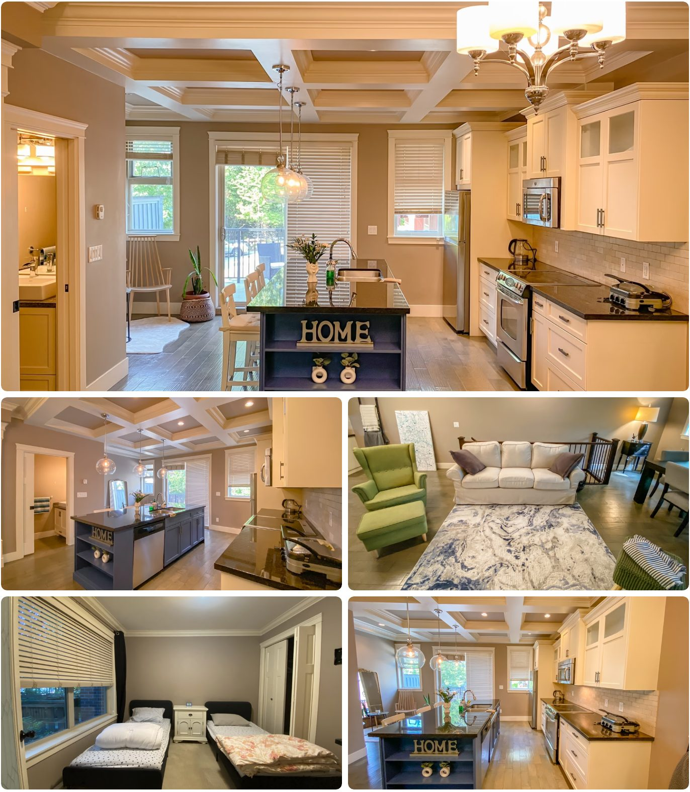

"1년 안에 2년 유학의 효과" · 가이드라인 성실 이행 + 개인 성취도 기준, 대학·컬리지 진학률 99% 목표 (에듀스마트 자체 기준)
PROGRAM SNAPSHOT
한눈에 보는 프로그램 개요
🎒
대상 학년
Grade 7~11 (중1~고2 전후)
🏫
학교 옵션
공립 3곳 · 사립 2곳 (총 5개)
📝
선발 방식
서류 + 인터뷰 (중위권 이상)
🎯
핵심 차별점
1:1 내신·입시 컨설팅
VIDEO
영상으로 먼저 확인하세요현지 답사 영상 + 에듀스마트 공식 소개 영상
▲ TNS유학이 직접 코퀴틀람 기숙사를 방문해 촬영한 현지 답사 영상
▲ 에듀스마트 공식 소개 영상
MENTORING PHILOSOPHY
입시 매니지먼트 3단계Direction → System → Execution
1
Direction
방향성 설계
학생의 성향·재능·목표를 분석해 진로 방향을 설정
2
System
구조적 관리
과목·비교과·에세이까지 하나의 시스템으로 관리
3
Execution
실행과 완주
정기 미팅·상시 소통으로 계획을 실제 성취까지 연결
1:1 내신 컨설팅 (G7~11 전체)
학생별 강점·목표에 맞춘 목표 대학 설정
학업(Academic)·교외활동(Extra Curricular) 로드맵 설계
정기 1:1 상담으로 자기주도적 성장 지원
대학입시 멘토링 (Only G11&12)
과목 선택부터 고득점을 위한 지속 관리
희망 전공별 학교 선택·분석, 입학신청서 작성
에세이(논술) 작성 지도 · 지원서 팔로업
정기 학교 소개 및 입시요강 설명회
SCHOOL OPTIONS
코퀴틀람·포트코퀴틀람 5개 학교
공립
Summit Middle
Grade 6~8 · 약 750명 · Westwood Plateau
Grade 7 학생이 처음 시작하기 좋은 공립 미들스쿨
공립
Terry Fox Secondary
Grade 9~12 · 약 1,500명 · Port Coquitlam
한국 학생 적고 유학생에 호의적, 한국 학점 인정·내신 합리적 평가로 현지 답사에서 강력 추천
공립
Pinetree Secondary
Grade 9~12 · 약 1,500명 · Coquitlam Town Centre
코퀴틀람 센터·Douglas College·스카이트레인 인접, 생활 편의성 최고. 단 한국 학생 비율은 체감상 높을 수 있음
사립
BC Christian Academy
Pre-K~12 (미들 5~8 / 하이 9~12) · 약 350명
Grade 7~11 전 학년대를 한 학교에서 이어갈 수 있음, AP 과정 운영
사립
Archbishop Carney Regional Secondary
Grade 8~12 · 약 500명 · Port Coquitlam · 1994년 개교 · 가톨릭계
국제학생·한국 학생 비율 낮음. AP 과목 수는 대형 공립보다 적지만 교사·학교의 관리 분위기가 좋다는 현지 평가. 자리가 제한적이라 조기 지원 필요
💡 학교 선택 흐름 — Grade 7은 Summit Middle 또는 BCCA(미들스쿨)로 시작 → Grade 9~11은 Terry Fox·Pinetree(공립) 또는 BCCA·Archbishop Carney(사립 하이스쿨) 중 선택. 정확한 학년별 배정·빈자리는 신청 시점에 확인이 필요합니다.
LOCATION
코퀴틀람, 짧은 동선이 만드는 안정감학교 · 기숙사 · 생활 인프라가 차량으로 가깝게 연결
🏫
학교
Summit / BCCA
🏠
기숙사
코퀴틀람 제1/2기숙사
🏬
코퀴틀람 센터
쇼핑·학원·도서관
⛳
액티비티
월 2회 정기 액티비티
코퀴틀람은 밴쿠버 도심에서 차로 30~40분 거리의 트라이시티 권역 중심 도시입니다. 신축 단독주택이 많은 한적하고 안전한 주거지역에 기숙사가 위치하며, 코퀴틀람 센터 인근으로 쇼핑몰·도서관·학원가·공원 등 생활 인프라 이용이 편리합니다. 어린 학생일수록 이동 동선이 짧고 단순한지가 적응과 생활 안정에 큰 영향을 줍니다.
DAILY SCHEDULE
하루 일과Grade 7~10 vs Grade 11~12
08:00 ~15:00
캐나다 정규학교 수업
5개 학교 중 배정된 학교에서 현지 정규 커리큘럼 이수
15:00 ~17:30
학습센터 — 영어 내신관리 수업
주 3회 1.5시간, 과목별 목표 점수 기반 모니터링
17:30 ~19:00
기숙사 복귀 · 저녁식사
한식 위주 3식, 2인 1실 기숙사 (코퀴틀람 제1·2기숙사)
19:00 ~21:00
저녁 프로그램
원어민 회화 / Homework Help / 온라인 문법·라이팅 / 액티비티 (요일별 구성)
21:30~
전자기기 반납 · 취침 준비
평일 취침 전 휴대폰·전자기기 전원 수거
이동
기숙사 ↔ 학교 ↔ 학습센터
에듀스마트 차량 이동 G7~10 · 학습센터 이후 개별 귀가 G11~12
📌 요일별 저녁 프로그램
월
화
수
목
금
원어민 회화 Homework Help
Homework Help
원어민 회화 Homework Help
온라인 문법·라이팅
Skate / Swimming
주 1회 Group Online 문법 수업은 Grade 7~10 대상 · Grade 11/12는 별도 멘토링 비용 추가
학교별 등교/하교: Terry Fox 08:00/14:05 · Carney 08:20/14:45 · BCCA High 08:25/14:50 · BCCA Middle 08:35/15:00
DORMITORY
코퀴틀람 제1·2기숙사학생들이 실제로 생활하는 공간
제1기숙사 — 외관 · 거실 · 다이닝룸 · 주방 · 침실

제2기숙사 — 주방 · 거실 · 다이닝룸 · 2인 1실 침실
두 기숙사 모두 코퀴틀람의 조용한 주택가에 위치한 단독주택형 하우스입니다. 넓은 공용 거실과 다이닝 공간에서 함께 생활하며, 침실은 2인 1실로 배정됩니다. Summit Middle·BCCA 학생뿐 아니라 Terry Fox, Pinetree 등 인근 고등학교 학생들도 함께 생활하는 구조라, 학년이 올라가도 같은 생활 인프라를 이어갈 수 있습니다.
ACADEMIC MANAGEMENT
철저한 학업 관리 시스템 (Grade 7~11)
주중
밀착 내신 관리
매주 3회 영어 위주의 내신 관리 수업 + 1회 온라인 문법 수업
월간
독서 및 에세이 지도
주기적인 단어 암기 점검, 독서 지도, 에세이 제출을 통한 영어 기본기 확립
상시
목표 지향적 모니터링
전문 입시 선생님과 아카데믹 가디언이 학생별 필요를 모니터링하고 과목별 목표 점수를 부여해 동기를 강화
2개월
수시 학부모 소통
두 달에 한 번 리포트 카드 발송 + 단톡방·전화로 현지 피드백 수시 전달
CURRICULUM
학년별 맞춤형 커리큘럼리스크를 최소화하는 단계별 설계
G10
FOUNDATION
흔들리지 않는 기초 완성
목표: 적성·진로 탐색, 과목 선택·성적 구조 설계, 학습 습관·시간 관리 정착
관리: 월 1회 대면 미팅으로 학습·생활 점검 및 리스크 조기 관리
G11
BLUEPRINT
본격적인 입시 로드맵 설계
목표: 대학·전공 후보군 설정, 합격 가능성(Goal)과 현 위치(Reality) 간극 분석
관리: 월 2회 대면 미팅으로 진로·성적·비교과 종합 점검
G12
EXECUTION
실전 입시 매니지먼트
목표: 최종 지원 전략 수립, 에세이 방향 설계·구조 지도, 서류·일정 관리
관리: 월 2회 대면 + 상시 모니터링 · G12 단기 등록은 제공하지 않음
INSIGHT
왜 "AP 몰아듣기"보다 내신 관리일까요?
캐나다 대학을 목표로 하는 유학생의 경우, 무리하게 AP를 여러 과목 듣기보다 일반 과목(Regular)에서 높은 성적을 받는 쪽이 입시에 더 유리한 경우가 많습니다. 예를 들어 일반 English 12에서 95~96점을 받을 수 있는 학생이 AP 과목에서 90~91점을 받는다면, 캐나다 대학 지원에서는 전자가 더 유리할 수 있다는 것이 현지 컨설턴트들의 공통된 의견입니다.
AP가 특히 의미 있는 경우
미국 상위권 대학 지원
한국 대학 지원 또는 복귀를 함께 고려하는 경우
대학 학점 선이수가 목적인 경우
영어가 사실상 원어민 수준인 최상위권 학생
즉, "AP를 몇 개 들었느냐"보다 "11~12학년 핵심 과목에서 얼마나 안정적으로 높은 내신을 유지했느냐"가 실질적인 무게를 갖습니다. 이 프로그램이 주 3회 영어 내신관리 수업, 과목별 목표 점수 설정, 두 달 단위 리포트카드를 핵심 서비스로 두는 것도 이 때문입니다.
COST
프로그램 비용 (연간 기준)
학교 옵션
Grade 7~10
Grade 11~12
공립Summit / Terry Fox / Pinetree
CA$69,700약 6,970만 원
CA$73,700약 7,370만 원
사립Archbishop Carney
CA$73,700약 7,370만 원
CA$77,700약 7,770만 원
사립BC Christian Academy
CA$76,700약 7,670만 원
CA$80,700약 8,070만 원
●환율: 2026년 8월 기준 CAD/KRW 약 1,000원 적용, 환전 시점에 따라 변동 가능
●불포함: 교육청·사립학교 등록비, 교복, 학교 교재·준비물, 학교 액티비티, 악기 구입·렌트, 개인 액티비티, 용돈
●옵션: 1:1 과목별 과외 $60~80/hr · 학습센터 월 4회 추가 시 $200 추가 · 학비 인상 시 차액 납부
FAQ
학부모님이 자주 묻는 질문
Q1AP 대신 IB를 들을 수 있나요?
이 프로그램의 추천학교 5곳은 모두 AP 중심이며 IB는 운영하지 않습니다. IB Diploma를 꼭 하고 싶다면 버나비 프로그램의 New Westminster Secondary가 유일한 선택지입니다. 다만 캐나다 대학 진학이 목표라면 IB가 필수는 아니며, 오히려 일반 과정에서 높은 내신을 유지하는 쪽이 유리한 경우가 많습니다.
Q2영어가 부족한 Grade 9~11 학생도 정규수업을 따라갈 수 있나요?
ELL 프로그램으로 정규수업과 병행합니다. 다만 고학년일수록 부담이 큽니다. Social Studies·Science처럼 읽기 분량이 많은 과목은 학년을 낮춰 배정되기도 하고, 그만큼 졸업까지 학기가 늘어날 수 있습니다. 그래서 이 프로그램은 주 3회 영어 내신관리 수업을 기본으로 넣어, ELL 단계를 빨리 벗어나 정규 과목 성적을 끌어올리는 데 초점을 둡니다.
Q3한국에서 받은 성적은 학점으로 인정되나요?
인정됩니다. 학교 카운슬러가 한국 성적표(영문·공증본)를 검토해 과목별로 캐나다 학점을 부여합니다. 다만 인정 폭은 학교마다 다릅니다. 현지 답사에서 Terry Fox는 한국 학점을 비교적 넉넉하게 인정해 주는 학교로 평가받았고, 이는 졸업 요건인 80학점을 채우는 속도와 직결되므로 학교 선택 시 실제로 중요한 변수입니다. 성적표는 최근 2년치를 영문으로 준비하세요.
Q4성적이 목표에 못 미치면 어떻게 관리되나요?
과목별로 목표 점수를 정해두고 아카데믹 가디언이 모니터링하며, 두 달마다 리포트카드가 부모님께 발송됩니다. 목표 미달 시 학습센터 수업 시간을 늘리거나 1:1 과외를 붙이는데, 여기서 추가 비용이 발생합니다. 학습센터 수업을 월 4회 이상 추가하면 200달러, 1:1 과목 과외는 시간당 60~80달러입니다. 성적이 불안한 과목이 있다면 이 비용을 예산에 미리 반영해 두시는 것이 현실적입니다.
Q5Grade 11·12는 혼자 기숙사로 돌아온다는데 괜찮을까요?
괜찮습니다. 코퀴틀람·포트코퀴틀람은 버스와 스카이트레인이 잘 연결된 안전한 주거지역이고, 고3에 해당하는 나이대 학생이 스스로 이동하는 것은 현지에서 일반적입니다. 오히려 대학 진학 후 독립 생활을 앞둔 연습이라는 측면이 있습니다. 다만 겨울에는 오후 4시면 어두워지므로, 초기에는 동행하며 경로를 익힌 뒤 자율 이동으로 넘어가는 방식으로 진행됩니다.
Q6Archbishop Carney는 가톨릭 학교인데 비종교인도 다닐 수 있나요?
다닐 수 있습니다. 국제학생을 받고 있으며 세례 여부를 입학 조건으로 요구하지 않습니다. 다만 Christian Education 과목이 정규 필수 과목이고 미사·기도 등 종교 행사가 학사 일정에 포함되므로, 이를 문화 경험으로 받아들일 수 있는지 아이와 미리 이야기해 보시는 편이 좋습니다. 반대로 규율이 잡힌 면학 분위기와 낮은 한국 학생 비율은 이 학교의 장점입니다.
Q7미국 대학도 지원하고 싶은데 추가 비용이 얼마나 드나요?
기본 제공은 캐나다 대학 컨설팅이고, 미국과 한국 대학 컨설팅은 별도 비용으로 추가할 수 있습니다(Grade 11~12 대상). 금액은 브로슈어에 공개되어 있지 않아 개별 견적입니다. 미국 대학은 SAT/ACT, 에세이, 추천서, 과외활동까지 준비 범위가 넓어 준비 시작 시점이 캐나다보다 1년가량 빠르므로, 목표가 미국이라면 Grade 10 때 미리 상담을 받으시는 것이 좋습니다.
Q8중간에 다른 학교로 옮길 수 있나요?
공립학교 간(Terry Fox ↔ Pinetree 등) 전학은 같은 SD43 교육청 안이라 절차가 비교적 간단하지만, 빈자리가 있어야 하고 보통 학기 단위로 움직입니다. 사립은 훨씬 어렵습니다. Archbishop Carney는 정원이 적어 학기 중 편입 자리가 거의 없습니다. 따라서 처음 학교를 정할 때 '한국 학생 비율'과 '통학 편의성' 중 무엇이 더 중요한지 명확히 정하고 선택하시는 편이 낫습니다.
Q9학생비자는 얼마나 걸리고, 12학년까지 계속 연장되나요?
10개월 과정이므로 학습허가서가 필요하고, 미성년자는 커스터디언십 선언서가 함께 들어갑니다. 학습허가서는 보통 입학허가서에 적힌 과정 기간에 맞춰 발급되므로, 다음 학년을 이어가려면 만료 전에 연장 신청을 해야 합니다. 연장은 현지에서 온라인으로 진행하며, 에듀스마트가 현지 업체를 연결해 지원합니다. 여권 유효기간이 짧으면 비자 기간도 그에 맞춰 짧게 나오니 미리 확인하세요.
Q10대학 학비까지 하면 총 얼마를 준비해야 하나요?
이 프로그램 비용은 고등학교 과정까지입니다. 캐나다 대학 국제학생 학비는 전공과 학교에 따라 연간 3~5만 캐나다달러 선이고 생활비가 별도로 1만 5천~2만 달러가량 듭니다. 즉 4년제 학부까지 고려하면 고등학교 과정 이후로도 상당한 예산이 필요합니다. 다만 캐나다 고등학교를 졸업하면 컬리지 2년 후 대학 3학년 편입 같은 비용 효율적인 경로도 열리므로, 진학 전략과 예산을 함께 설계하시는 것을 권합니다.